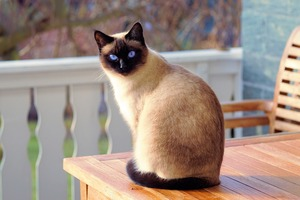
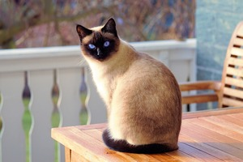

Recent Adoptions:
Rose
Rose is a 8-year old, Simeese cat, with a very affectionate nature. Adopted 12/8/23.
Rose is a 8-year old, Simeese cat, with a very affectionate nature. Adopted 12/8/23.
We are looking for more animal lovers to join us today!
We are currently looking for: